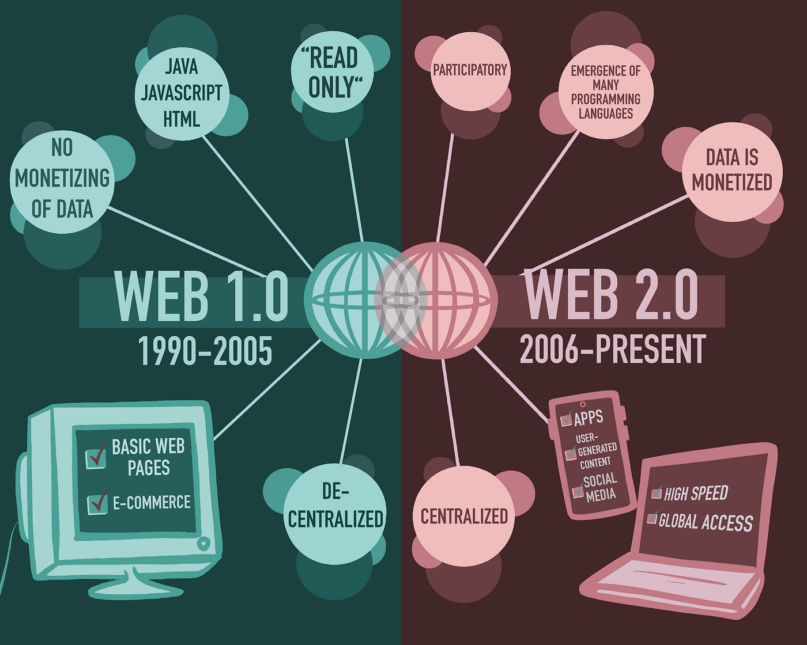

Web 1.0 represents the early stage of the web, consisting of "read-only" pages with little interaction[cite: 165]. Its primary purpose was for information sharing, where users could consume content but rarely create it.
In this era, the web was a collection of static documents served to the user.
